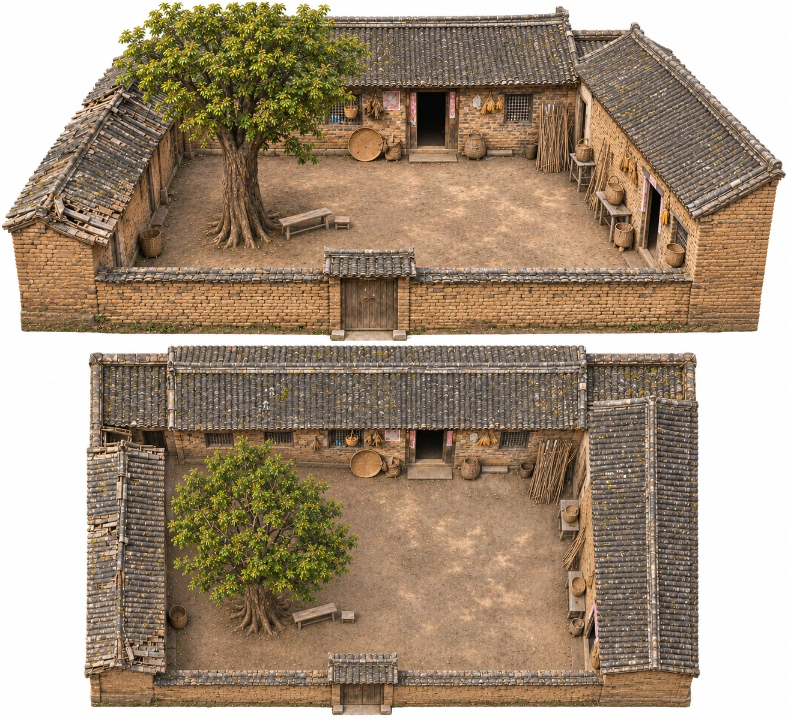
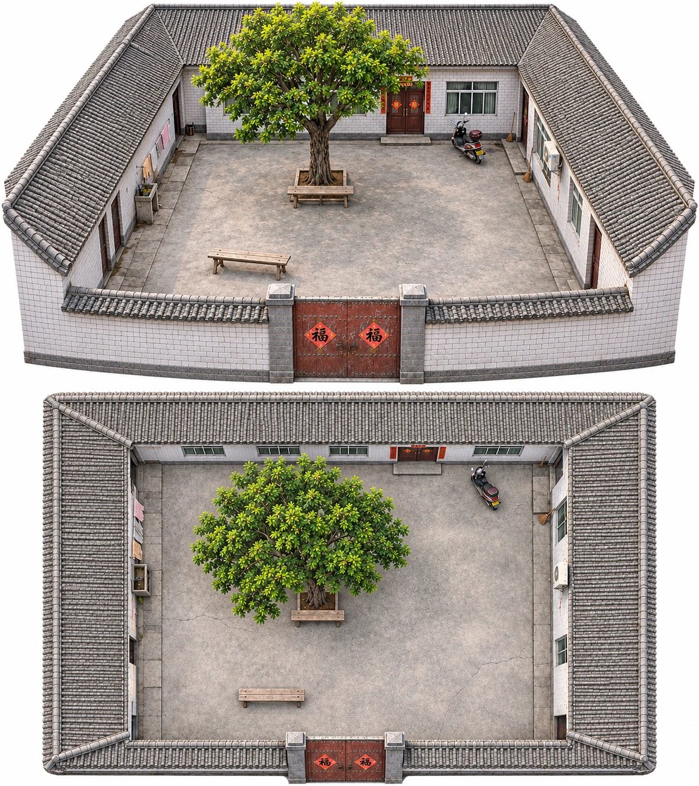
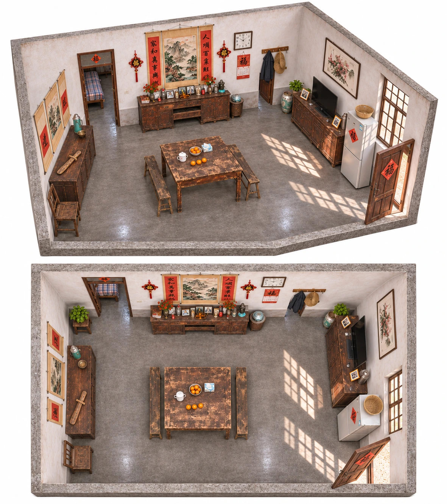
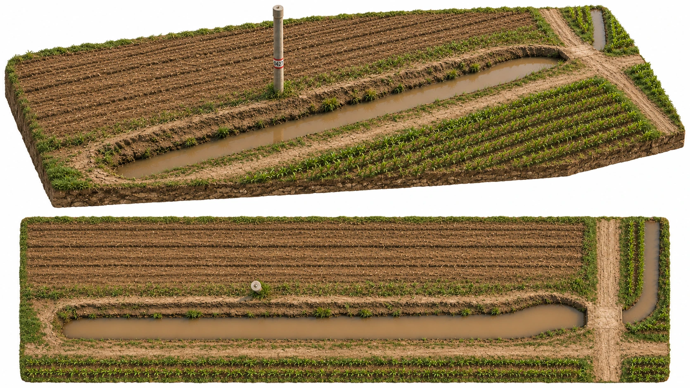
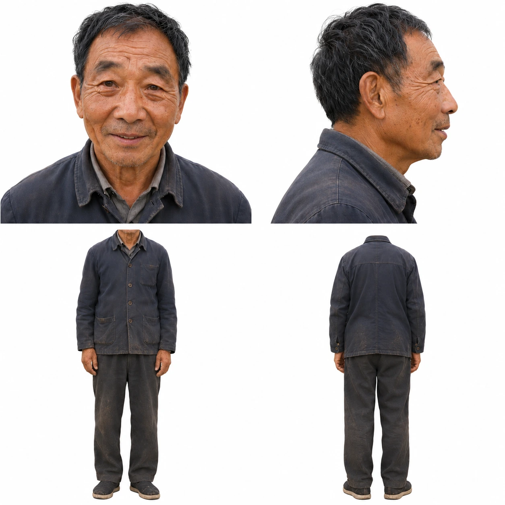
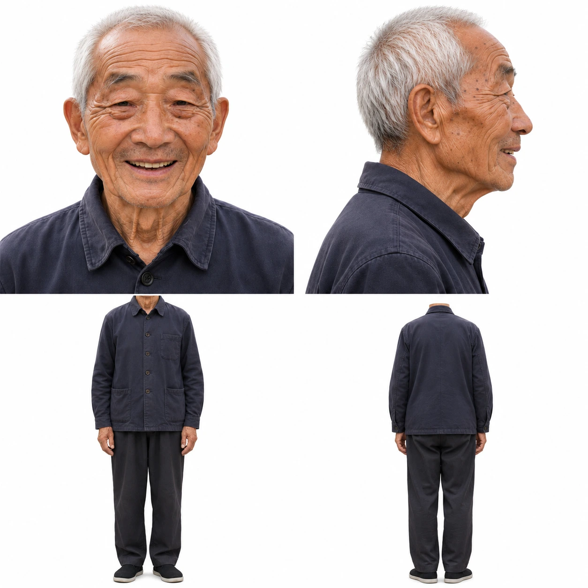
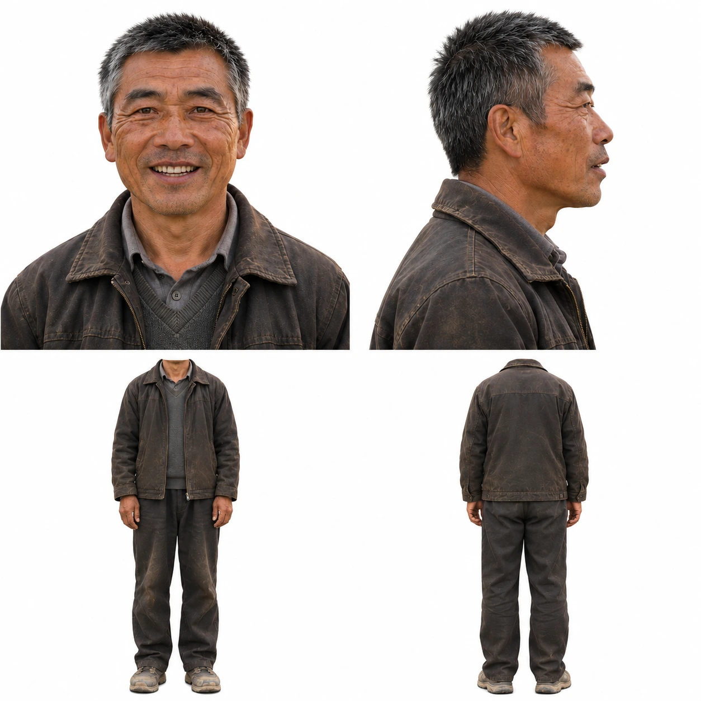
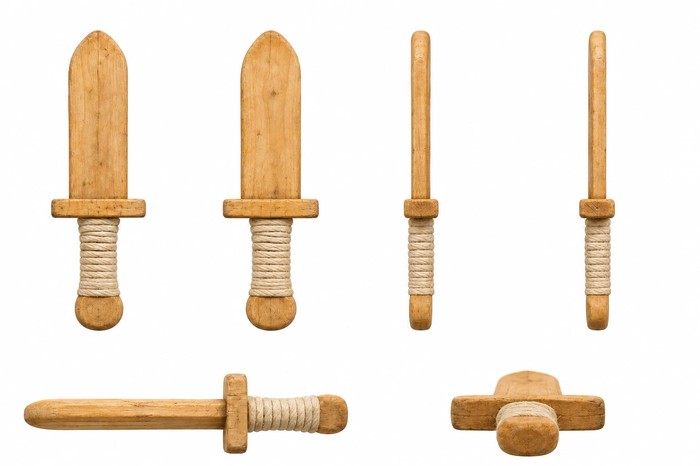
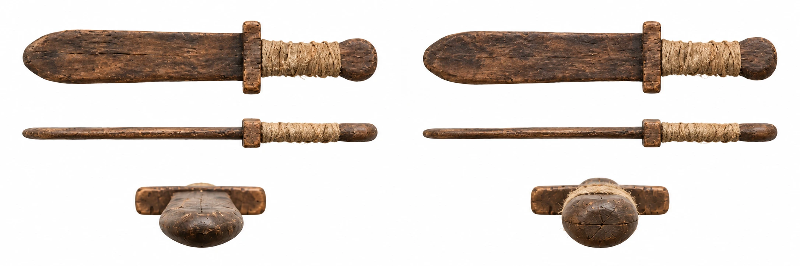

AI短片
爷爷
正在连接在线视频…
视频简介
云儿长大后一次次推迟返乡，最终从爷爷保存的旧木剑里认出童年的照顾。
在快手观看原视频 ↗制作资产
场景资产

童年土砖院_待验收
童年土砖院_待验收的场景视觉设定，用于空间布局、光影与镜头背景。

翻修后的院子_待验收
翻修后的院子_待验收的场景视觉设定，用于空间布局、光影与镜头背景。

老屋客厅_待验收
老屋客厅_待验收的场景视觉设定，用于空间布局、光影与镜头背景。

童年灌溉田沟_待验收
童年灌溉田沟_待验收的场景视觉设定，用于空间布局、光影与镜头背景。
角色资产

爷爷_待验收
爷爷，云儿童年记忆里的照顾者。陪孩子玩耍，在田沟将他拉起，并亲手替他做圆头木剑。延续成片参考中的乡村日常穿着。

白发爷爷_待验收
爷爷的晚年造型。发色斑白、步伐放缓，保留童年版本的面部识别特征。视频通话时想看清孙子，返乡时牵他进院。
母亲_待验收
云儿的母亲，参与离乡告别与城里饭桌段落。服装、发型和体态按对应场次参考，表现自然的日常状态。

三大爷_待验收
云儿在返乡村路上遇到的长辈。保持原片朴素日常服装和年龄感，表演以认出并招呼云儿为主。
道具资产

木玩具剑_待验收
爷爷给幼年云儿新做的圆头木剑。保持木纹、圆头和握柄轮廓，外观为刚加工后的木面。

旧木玩具剑_待验收
爷爷多年保留的同一把木剑。延续原有尺寸和轮廓，以颜色变深、磨痕和钝化表现使用与存放，置于老屋柜上。
剧本与分镜
完整剧本与分镜脚本_待听校
故事梗概 云儿长大后一次次推迟返乡，最终从爷爷保存的旧木剑里认出童年的照顾。 人物说明 云儿为主观视角，爷爷贯穿童年和返乡，母亲与三大爷分别推动离乡和回村情节。 场景说明 土砖院、田沟作为童年主要空间，翻修后的院子与老屋客厅承接返乡。 道具用途 新制木剑连接童年的许诺，磨损的旧木剑触发返乡回忆。 图像依据抽样参考帧制作。表中为估计镜段，时长单位为秒。 # 《爷爷》叙事剧本 据全片参考帧和可见字幕整理。人物对白为概述，原声待听校。 **童年 · 老院与田沟** 六岁的云儿想当大侠，手持木条追着院里的鸡，闯祸后跑向爷爷。为练轻功，他又试跳田沟，爷爷伸手把他拉起来。云儿拿着断剑来求助，爷爷另做了一把圆头木玩具剑给他。奶奶去世那天，云儿还不明白“走了”，只说以后由自己陪爷爷。 **长大 · 离乡与城里** 爷爷陪云儿度过童年，切西瓜、送新书包、帮他戴帽。云儿上中学前把木剑留给爷爷。爷爷进城探望，递来削好的苹果，临走嘱咐他有空回家。母亲在饭桌上提起这件事，云儿说最近作业多。 **大学与工作 · 一再推迟的回家** 国庆将近，云儿和同学约好出游。他在车站接到爷爷电话，说过年再回。毕业工作后，他在电脑前和爷爷视频。爷爷头发已经白了，说自己看不清，让云儿把脸凑近，又问他什么时候回来。 **返乡 · 老家** 同伴提议出游，这次云儿选择回村。村路上碰到三大爷。红门打开，爷爷拉他进屋，问他能待几天。云儿认出柜上的旧木剑。画面切回小时候爷爷递来新剑的瞬间，再回到屋里，爷爷给他橘子。院里，爷爷从长凳起身，云儿伸手扶住他。 | 镜号 | 画面内容 | 镜头视角 | 使用资产 | 动作描述 | 台词/旁白 | 音效 | 单镜头时长 | |---|---|---|---|---|---|---|---| | 1（00:00–00:12） | 第一人称持木条追鸡，晃动转向爷爷面部 | 第一人称 | 土砖院、公鸡、木条、爷爷 | 第一人称持木条追鸡，晃动转向爷爷面部 | 见剧本对白概述 | 原声待听校 | 12 | | 2（00:12–00:20） | 俯向泥水田沟，鞋入水，爷爷伸手拉起 | 第一人称 | 田沟、爷爷 | 俯向泥水田沟，鞋入水，爷爷伸手拉起 | 见剧本对白概述 | 原声待听校 | 8 | | 3（00:20–00:36） | 阴凉院中递断剑，切爷爷交来新木剑 | 按参考帧复核 | 土砖院、断剑、木玩具剑 | 阴凉院中递断剑，切爷爷交来新木剑 | 见剧本对白概述 | 原声待听校 | 16 | | 4（00:36–00:50） | 院里来人，爷爷近景告知奶奶离世 | 按参考帧复核 | 土砖院、爷爷、村民 | 院里来人，爷爷近景告知奶奶离世 | 见剧本对白概述 | 原声待听校 | 14 | | 5（00:50–01:04） | 柳树旁牵手，插叙西瓜、新书包、帽子和红包 | 按参考帧复核 | 田边小路、西瓜、书包、帽子、红包 | 柳树旁牵手，插叙西瓜、新书包、帽子和红包 | 见剧本对白概述 | 原声待听校 | 14 | | 6（01:04–01:18） | 云儿把剑交给爷爷，母亲提行李来告别 | 按参考帧复核 | 土砖院、木玩具剑、母亲、行李箱 | 云儿把剑交给爷爷，母亲提行李来告别 | 见剧本对白概述 | 原声待听校 | 14 | | 7（01:18–01:44） | 城区小区迎面相见，书桌递苹果，客厅看电视，门口道别 | 按参考帧复核 | 小区、书桌、苹果、客厅、电视、手机 | 城区小区迎面相见，书桌递苹果，客厅看电视，门口道别 | 见剧本对白概述 | 原声待听校 | 26 | | 8（01:44–02:10） | 家中饭桌切大学聚餐，再切站台上手机通话 | 按参考帧复核 | 餐厅、饭菜餐具、同学、站台、手机 | 家中饭桌切大学聚餐，再切站台上手机通话 | 见剧本对白概述 | 原声待听校 | 26 | | 9（02:10–02:22） | 办公桌视频通话，白发爷爷进入手机屏幕 | 插入特写与反应镜头 | 工位、电脑、台灯、手机、白发爷爷 | 办公桌视频通话，白发爷爷进入手机屏幕 | 见剧本对白概述 | 原声待听校 | 12 | | 10（02:22–02:32） | 玻璃办公楼前同伴邀约，云儿决定回家 | 按参考帧复核 | 办公楼外广场、同伴 | 玻璃办公楼前同伴邀约，云儿决定回家 | 见剧本对白概述 | 原声待听校 | 10 | | 11（02:32–02:48） | 村路认出三大爷，切贴福字的红门 | 按参考帧复核 | 村路、三大爷、红木双门 | 村路认出三大爷，切贴福字的红门 | 见剧本对白概述 | 原声待听校 | 16 | | 12（02:48–03:02） | 爷爷开门牵手进屋，问这次能待多久 | 按参考帧复核 | 翻修后院子、老屋客厅、白发爷爷 | 爷爷开门牵手进屋，问这次能待多久 | 见剧本对白概述 | 原声待听校 | 14 | | 13（03:02–03:20） | 柜上旧剑，穿插新剑旧时画面，爷爷递橘子 | 插入特写与反应镜头 | 陈旧木剑、木柜、橘子、客厅 | 柜上旧剑，穿插新剑旧时画面，爷爷递橘子 | 见剧本对白概述 | 原声待听校 | 18 | | 14（03:20–片尾） | 院中长凳旁回忆，第一人称伸手扶爷爷起身 | 第一人称 | 翻修后院子、长凳、白发爷爷 | 院中长凳旁回忆，第一人称伸手扶爷爷起身 | 见剧本对白概述 | 原声待听校 | 待核 |